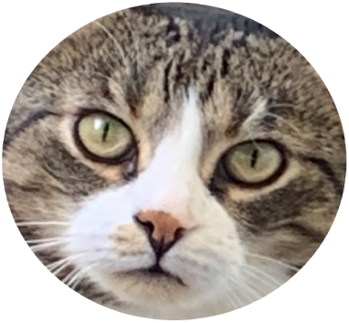

Diese Webseite bietet einen umfassenden Katzenratgeber mit vielen Informationen rund um Haltung, Pflege und Ernährung von Katzen. Es werden grundlegende Bedürfnisse von Katzen erklärt, insbesondere eine artgerechte und ausgewogene Ernährung mit wichtigen Nährstoffen wie Proteinen und Fetten. Außerdem behandelt diese Webseite typische Alltagsthemen wie Gesundheit, Verhalten und mögliche Krankheiten bei Katzen. Ziel des Ratgebers ist es, Katzenhaltern praktische Tipps zu geben, damit ihre Tiere gesund bleiben und gut versorgt sind. Viel spaß auf dieser Webseite und grüß deine Katze ganz lieb von mir!